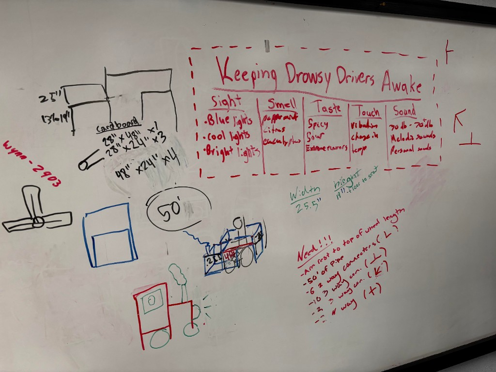
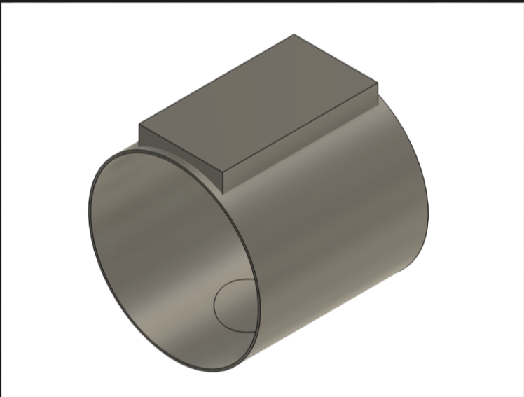

ALTEC Innovation
Project Description
For the ALTEC Innovation Challenge, my team made a website for PulseGuard. PulseGuard was a driver safety concept based on a wristband that monitors heart rate and alerts the driver if their heart rate drops, which is a sign of drowsiness.
The website explained how the wristband works and gave users a place to find information about setup troubleshooting battery life and how to get in touch. Our design was planned to cost about $30 per unit which was much cheaper than AI dash cams.

Project Plan
Final Document
Project Website: pulseguard.info
The final website had a short explanation of the product a how-it-works section an FAQ and a way to contact us.
Final Project and Prototype


Our final idea focused on helping tired drivers stay alert. The wristband was going to use a 3D printed shell and an Arduino to control when it vibrated. The code used a running average to decide when to trigger the alert. For the demo I reversed the code so it would vibrate when I did jumping jacks.
The older prototype has pretty much been lost to my closet. It also did not really look like a wristband and was mostly just the hardware.
Awards

Overall Project Reflection
This project gave me more experience working with a team and presenting an idea. It also helped me think about how a product should be explained to real users. Sadly we lost but I still learned a lot from the process and from building the site and demo.